In CIA-1 I built VitalWatch, a cloud system that checks a patient's vital signs and sends an alert back to their wearable. Everything there went to the cloud. That works, but every reading has to travel over the internet and back, and in a hospital with many patients the internet link becomes the slow point. For a heart-rate or SpO2 alert, a delay of a few hundred milliseconds is too much.
For CIA-2 I moved VitalWatch to a fog design. Small computers inside the hospital (one per ward, plus one hospital server) do the urgent work close to the patient, and only the heavy work goes to the cloud. The hard part is deciding where each task should run. So the main work of this assignment is a scheduler I call LAPS (Latency-Aware Priority Scheduler). For every task it looks at priority, deadline, expected latency, CPU load, network bandwidth and energy, and then picks the local fog node, another fog node, or the cloud.
I tested LAPS in two ways:
The tasks come in three types:
| Task type | Priority | Size (MI) | Data | Deadline | How often (per patient) |
|---|---|---|---|---|---|
| Critical vitals check (HR, SpO2, BP, temp) | P1 | 30 – 70 | 1 – 2 KB | 100 ms | every 1 s |
| ECG window analysis (10 s of ECG) | P2 | 300 – 700 | 10 – 20 KB | 1 s | every 10 s |
| Bulk job (24 h trend, risk model, report) | P3 | 4000 – 12000 | 200 – 400 KB | 10 s | every 5 min |
I read 13 papers on fog task scheduling, load balancing, latency-aware computing and resource allocation. For some of them I could only get the abstract, so the table below only lists what each paper actually reports.
| # | Paper | Algorithm / approach | Simulation / dataset | Metrics | Result | Limitation |
|---|---|---|---|---|---|---|
| 1 | Gupta et al., 2017 [1] | iFogSim toolkit; edge-ward module placement vs cloud-only | iFogSim (EEG game, camera surveillance) | latency, network use, energy, cost | edge-ward gave lower latency and much lower network use than cloud-only | static placement; no priority, deadlines or load balancing between fog nodes |
| 2 | Mahmud et al., 2019 [2] | latency-aware placement of application modules | iFogSim | deadline satisfaction, resource use | better than other latency-aware strategies (no figure given in abstract) | module placement, not per-task scheduling; energy and priority not covered |
| 3 | Bitam et al., 2018 [3] | Bees Life Algorithm (metaheuristic) | own experiments | CPU execution time, memory | beat PSO and GA | ignores network latency, deadlines, energy and cloud offload |
| 4 | Pham & Huh, 2016 [4] | heuristic for cloud-fog scheduling | numerical study | makespan, cloud cost | better makespan-cost trade-off | no deadlines, priority or energy |
| 5 | Deng et al., 2016 [5] | optimisation: split workload between fog and cloud | numerical simulation | power, delay, bandwidth | fog cuts delay and bandwidth use | works on total workload, not each task; no priority |
| 6 | Jamil et al., 2020 [6] | delay-aware fog job scheduler | iFogSim | delay, network usage | 32% lower delay and 16% lower network use than FCFS | only FCFS as baseline; no cloud spill or priority classes reported |
| 7 | Aladwani, 2019 [7] | TCVC: tasks put into 3 importance classes by patient status, on top of MAX-MIN | CloudSim | execution, waiting and finish time | improves static scheduling | static; no live load, bandwidth, energy or cloud offload |
| 8 | Khattak et al., 2019 [8] | rule-based: forward to a nearby fog server when overloaded; critical data to cloud | 15,000 jobs, 10 fog devices (iFogSim-style) | processing time, power, response time | trends shown in figures | no baseline comparison; binary criticality; no deadlines |
| 9 | Talaat et al., 2020 [9] | LBOS: reinforcement learning + genetic algorithm load balancing | healthcare IoT-fog-cloud system | allocation cost, response time, balance level | best load-balancing level, 85.71% | no priority classes, deadlines or energy mentioned |
| 10 | Tuli et al., 2020 [10] | HealthFog: deep-learning diagnosis on FogBus; least-loaded worker, else cloud | real Raspberry Pi testbed, Cleveland heart dataset | accuracy, latency, power, bandwidth | ensemble raised accuracy by 16% | scheduling only uses a load threshold |
| 11 | Hussein & Mousa, 2020 [11] | ant colony and particle swarm task offloading | MATLAB, 200–2000 sensors, 8–20 fog nodes | response time, degree of imbalance | ACO beat PSO and Round Robin | energy not in objective; static scenarios; no priority |
| 12 | Hoang & Dang, 2017 [12] | FBRC: integer program + heuristic over fog regions and cloud | custom numerical simulation | completion / response time | beat region-only and cloud-only | no energy or priority; node state assumed known |
| 13 | Abdelmoneem et al., 2020 [13] | MobMBAR: ranks tasks by critical level and max response time, with mobility handoff | simulated hospital building | makespan, energy, missed tasks | 88% lower makespan, 92% lower energy | live CPU load and bandwidth not mentioned in abstract |
Gap: none of these papers makes one per-task decision that uses priority, deadline, live CPU load, link bandwidth and energy together, spills to a nearby fog node before going to the cloud, and is tested across growing healthcare load against several baselines. LAPS is my attempt at exactly that.
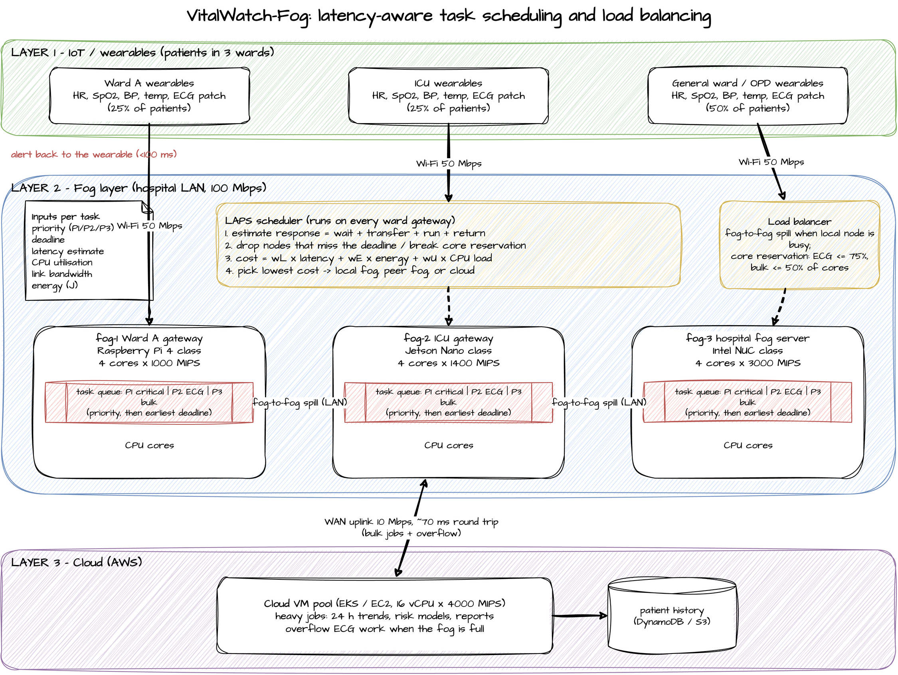
Figure 3.1 — VitalWatch-Fog architecture: wearables, fog nodes with task queues, the LAPS scheduler and load balancer, and the AWS cloud
| Layer | What is there | What it does |
|---|---|---|
| 1 — IoT | Wearables in three wards | Send vitals every second, ECG windows every 10 s and data for bulk jobs every 5 minutes, over Wi-Fi to their ward gateway |
| 2 — Fog | fog-1 (Pi 4 class), fog-2 (Jetson class), fog-3 (NUC class), each with a priority task queue | The ward gateway runs LAPS and picks a node. Each node runs P1 tasks first, then P2, then P3; inside one class the earliest deadline goes first. Busy nodes pass work to a peer fog node over the 100 Mbps LAN |
| 3 — Cloud | AWS VM pool (EKS/EC2) and storage | Runs the heavy jobs and any ECG work the fog cannot fit; keeps patient history. Reached over a 10 Mbps uplink with about 70 ms round trip |
| Parameter | How I measure it | How LAPS uses it |
|---|---|---|
| Latency | estimated response = time already spent + max(transfer, queue wait) + run time + return time | nodes that would miss 90% of the deadline are dropped; the rest pay a latency cost |
| Task priority | P1 critical, P2 ECG, P3 bulk | sets the queue order and the weights |
| CPU utilisation | busy cores ÷ total cores on each node | load term in the cost; core reservation |
| Network bandwidth | bits already waiting on the link ÷ link speed (Wi-Fi 50, LAN 100, WAN 10 Mbps) | part of the transfer time, so a busy uplink makes the cloud look slower |
| Deadline | 100 ms / 1 s / 10 s | hard filter, and earliest-deadline order inside a queue |
| Energy | run time × watts per core + bits × energy per bit of each link | energy term in the cost |
The queue wait is worked out by spreading the work already ahead of the task over the node's cores as they become free. A running task always counts, because tasks are never stopped half-way.
for each new task t at its ward gateway:
for each node n in {fog-1, fog-2, fog-3, cloud}:
R(n) = elapsed + max(transfer(n), wait(n)) + run(n) + return(n)
E(n) = run(n) x watts(n) + bits x energy_per_bit(path)
U(n) = busy cores / cores
keep n only if R(n) <= 0.9 x deadline
and (n is cloud or core reservation allows t)
if nothing is left:
P1 -> node with the smallest R(n); P2/P3 -> cloud
else:
cost(n) = wL x R(n)/deadline + wE x E(n)/max E + wU x U(n)
send t to the node with the lowest cost
| Priority | wL (latency) | wE (energy) | wU (load) | Core reservation on a fog node |
|---|---|---|---|---|
| P1 critical | 0.5 | 0.3 | 0.2 | may use every core |
| P2 ECG | 0.4 | 0.35 | 0.25 | ECG + bulk together at most 75% of cores |
| P3 bulk | 0.2 | 0.4 | 0.4 | bulk at most 50% of cores |
The reservation is the load-balancing part I care about most. A 10-second bulk job on a Pi can block a core for 8 seconds. If all cores fill up with such jobs, a critical alert has to wait. Keeping some cores free for urgent work, and sending the overflow to a peer fog node or the cloud, avoids that.
All code is in the cia2/ folder of the repo:
fogsim/ has the simulator. policies.py holds LAPS and the four baselines, and the same code is used by the live gateway.testbed/ has the fog node, gateway and wearable programs.docker-compose.yml starts the testbed.The simulator is a discrete-event simulator. Each patient sends tasks as random (Poisson) arrivals at the rates in Section 1. Links are shared queues with a speed and a delay, and nodes have cores and a queue. Each run covers 300 s; I ignore the first 30 s while the system warms up. Every setting ran with 5 seeds, 225 runs in total.
| Node | Cores × MIPS | Extra watts per busy core |
|---|---|---|
| fog-1 Ward A gateway (Raspberry Pi 4 class) | 4 × 1000 | 0.93 W |
| fog-2 ICU gateway (Jetson Nano class) | 4 × 1400 | 2.0 W |
| fog-3 hospital fog server (Intel NUC class) | 4 × 3000 | 8.75 W |
| Cloud VM pool | 16 × 4000 | 12 W (8 W × PUE 1.5) |
The four baselines:
I packed everything into one image, shakthe1311/vitalwatch-fog:v1. The ROLE variable picks node, gateway, wearables or sim.
tc netem to put 70 ms ± 10 ms of delay on the cloud container's network, like a real WAN.$ docker build -t shakthe1311/vitalwatch-fog:v1 -t shakthe1311/vitalwatch-fog:latest . ... Step 12/13 : HEALTHCHECK --interval=30s --timeout=5s --retries=3 CMD python -c "import urllib..." Step 13/13 : ENTRYPOINT ["testbed/entrypoint.sh"] Successfully built 036b86c9d6ee Successfully tagged shakthe1311/vitalwatch-fog:v1 Successfully tagged shakthe1311/vitalwatch-fog:latest $ docker compose up -d $ docker compose ps NAME IMAGE STATUS cia2-cloud-1 shakthe1311/vitalwatch-fog:v1 Up 9 minutes (healthy) cia2-cloud-wan-1 shakthe1311/vitalwatch-fog:v1 Up 9 minutes cia2-fog-1-1 shakthe1311/vitalwatch-fog:v1 Up 9 minutes (healthy) cia2-fog-2-1 shakthe1311/vitalwatch-fog:v1 Up 9 minutes (healthy) cia2-fog-3-1 shakthe1311/vitalwatch-fog:v1 Up 9 minutes (healthy) cia2-gateway-1 shakthe1311/vitalwatch-fog:v1 Up 9 minutes (healthy) $ docker compose logs | grep ready fog-1-1 | fog-1 ready: 2 cores, 619 MIPS per core fog-2-1 | fog-2 ready: 2 cores, 1581 MIPS per core fog-3-1 | fog-3 ready: 3 cores, 2403 MIPS per core cloud-1 | cloud ready: 4 cores, 2503 MIPS per core cloud-wan-1 | qdisc netem 8004: root refcnt 11 limit 1000 delay 70ms 10ms $ docker compose exec gateway python -c "...ping /health 5 times..." http://cloud:8000/health [150.3, 73.3, 72.0, 74.1, 76.8] (ms) http://fog-3:8000/health [4.4, 1.7, 1.3, 1.0, 0.9] (ms)
Figure 6.1 — building the image, starting the testbed, each node's self-measured speed, and the emulated WAN delay to the cloud
Then I started 60 patients' wearables for 45 s with docker compose run --rm wearables --patients 60 --duration 45 and opened the gateway dashboard:
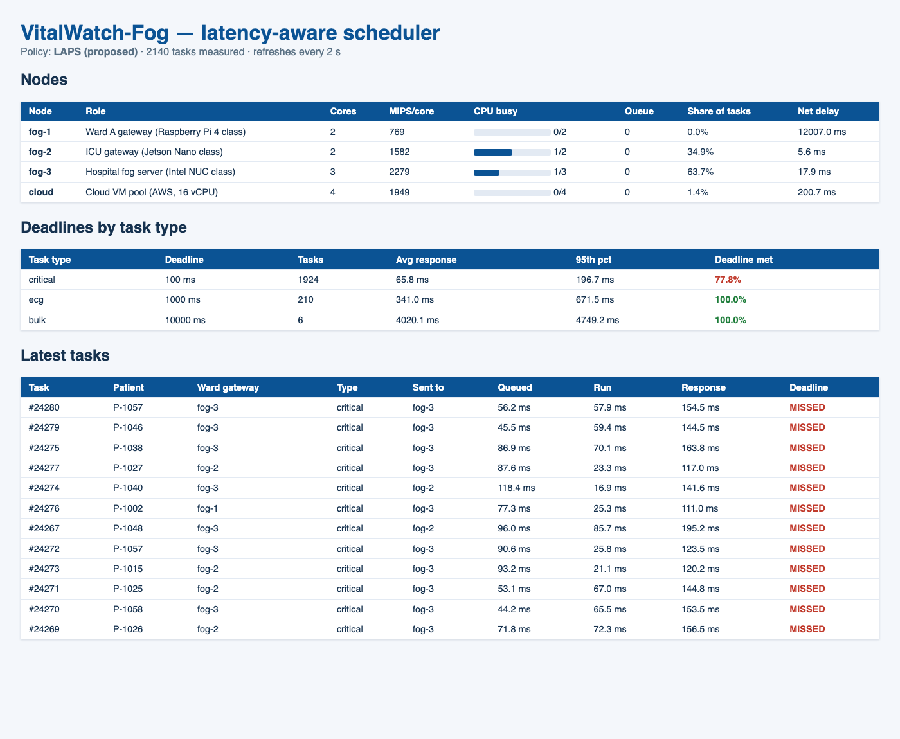
Figure 6.2 — live gateway dashboard under load: node CPU use, queues, share of tasks, deadline results per task type and the latest tasks
Over this live run 3012 tasks were measured. All 284 ECG tasks and all 8 bulk jobs met their deadlines. 80.3% of the 2720 critical checks met 100 ms (average 61.6 ms). LAPS put 63.5% of tasks on fog-3, 35.3% on fog-2 and 1.2% on the cloud. It sent nothing to fog-1: at 619 MIPS per core a critical check alone takes about 80 ms there, so it could not safely meet the deadline. The live result is lower than the simulator's because a laptop adds costs the simulator does not have: HTTP and Python overhead on every task, and Docker CPU limits that slow a container down in bursts. I still think the testbed is useful. It shows the same code making the same kind of choices on real containers with a real network delay.
All graphs below come from the simulator, as the average of 5 seeds, with 50 to 300 patients.
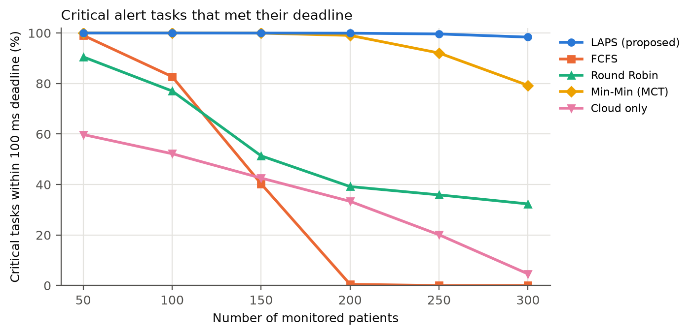
Figure 7.1 — critical tasks that met the 100 ms deadline
This is the most important graph. LAPS stays at 98.4% or above all the way to 300 patients. Min-Min is close until 200 patients and then drops to 79.3%. With FIFO queues, a critical task waits behind long ECG and bulk jobs. FCFS falls apart once the Pi gateway in Ward A is full (around 100–150 patients), and Round Robin fails for the same reason, since it keeps sending a quarter of all work to the slowest node. Cloud-only is bad even at 50 patients (59.8%), because a 70 ms round trip plus queueing on the uplink leaves almost no room inside 100 ms.
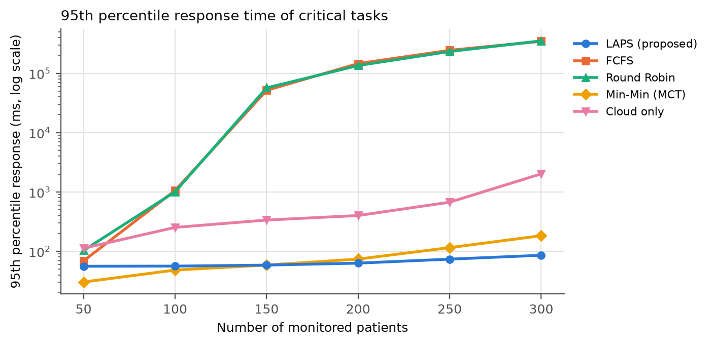
Figure 7.2 — 95th percentile response time of critical tasks (log scale)
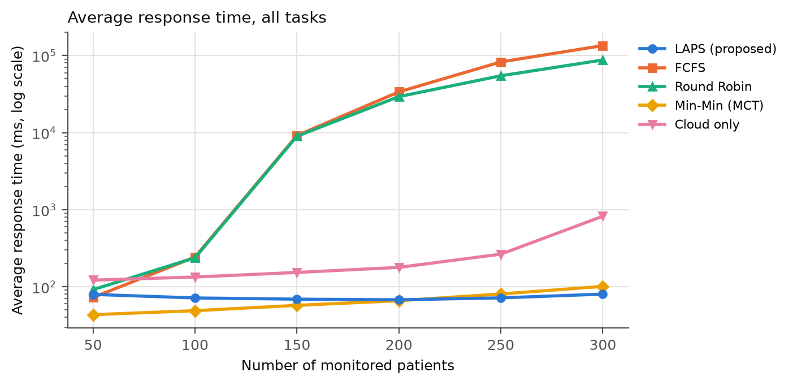
Figure 7.3 — average response time of all tasks (log scale)
At 300 patients, 95% of LAPS critical tasks finish within 85.5 ms. For Min-Min the figure is 182.7 ms and for cloud-only 2014 ms. FCFS and Round Robin queues grow without limit, so their averages reach tens of seconds.
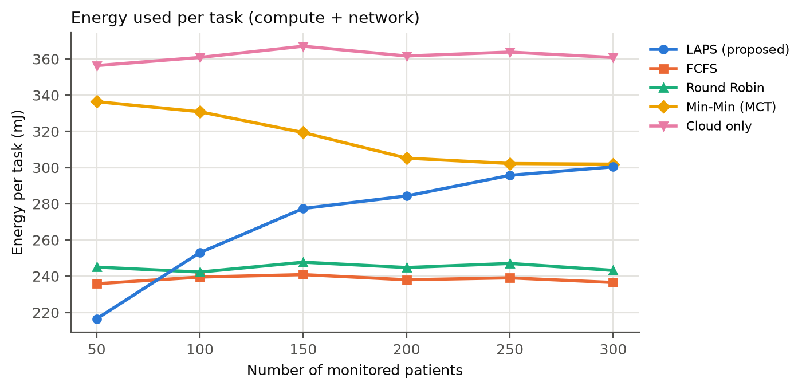
Figure 7.4 — energy per task
At light load LAPS uses the least energy of all five (216 mJ per task at 50 patients, against 336 mJ for Min-Min and 356 mJ for cloud-only). It keeps work on the small, efficient fog boards while they have room. At 300 patients it is level with Min-Min (300 vs 302 mJ). FCFS looks cheaper at high load only because it never uses the cloud, and it misses almost every deadline.
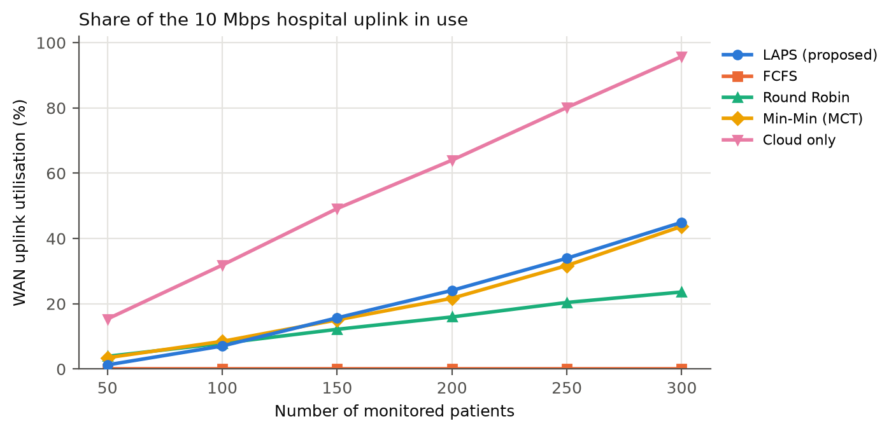
Figure 7.5 — use of the 10 Mbps hospital uplink
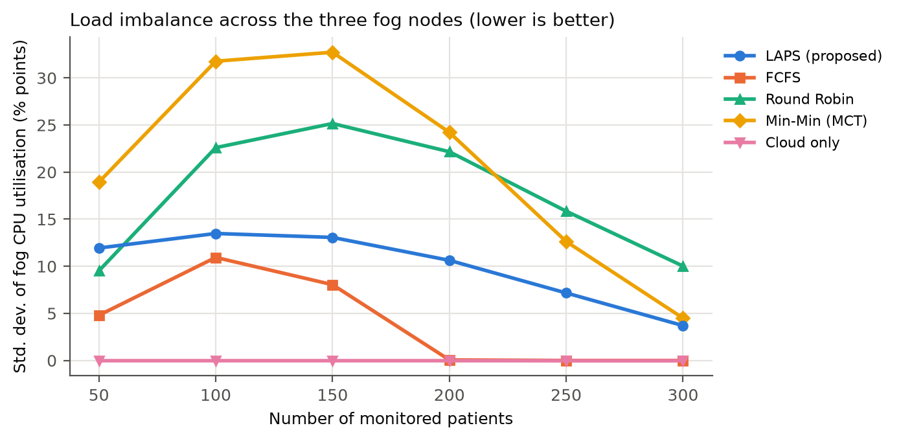
Figure 7.6 — load imbalance between the three fog nodes (standard deviation of CPU use)
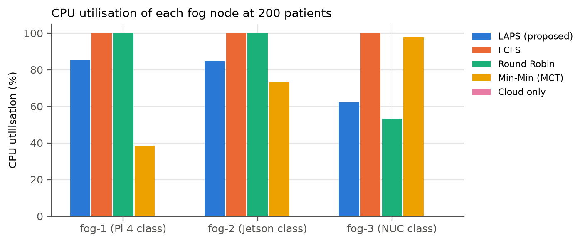
Figure 7.7 — CPU use of each fog node at 200 patients
Cloud-only fills 95.8% of the uplink at 300 patients. LAPS needs 44.9%, mostly for bulk jobs, which leaves room for other hospital traffic. Min-Min piles work onto the fast NUC: at 150 patients the imbalance is 32.7 points against 13.1 for LAPS. LAPS spreads the load because the CPU-load term pushes tasks away from a busy node.
To test a sudden change in load, I ran 150 patients and, between 120 s and 180 s, made 20% of them "emergency" patients. They send vitals five times as often and ECG ten times as often.
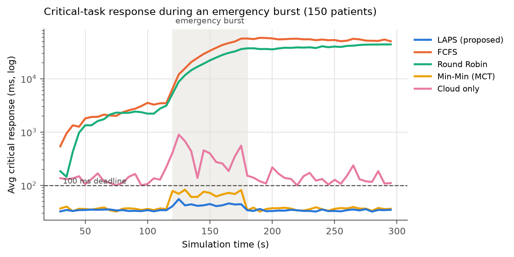
Figure 7.8 — average critical response time in 5-second steps during the burst
LAPS rises only slightly, stays far below 100 ms, and meets 99.9% of critical deadlines over the run. Min-Min gets close to the deadline line during the burst (94.9% met). Cloud-only spikes to almost a second, and FCFS and Round Robin never recover after the burst ends.
| Version | Critical deadline met | Critical p95 | Energy per task |
|---|---|---|---|
| LAPS (full) | 98.4% | 85.5 ms | 300 mJ |
| without the energy term | 99.4% | 68.4 ms | 314 mJ |
| without core reservation | 97.9% | 88.2 ms | 301 mJ |
| FIFO queues instead of priority queues | 94.3% | 103.4 ms | 301 mJ |
The priority queue gives the largest gain. The core reservation adds a little at this load. The energy term costs about one point of critical deadlines at 300 patients but saves about 4.6% energy, which brings me to the trade-off.
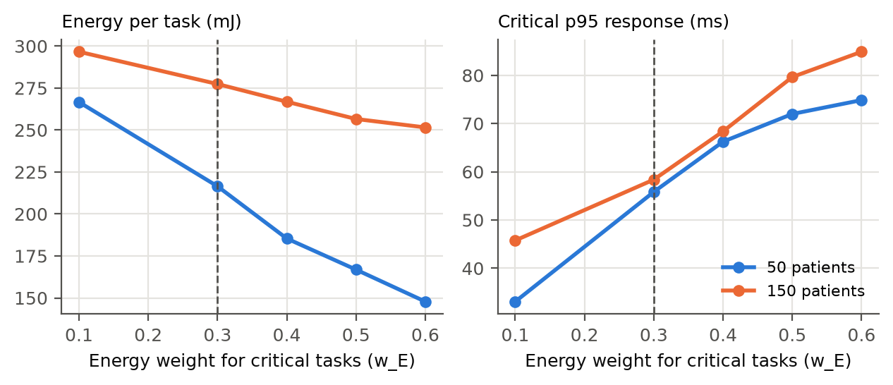
Figure 7.9 — changing the energy weight for critical tasks: energy against latency (dashed line = the value I chose)
Raising the energy weight from 0.1 to 0.6 cuts energy per task at 50 patients from 266 mJ to 148 mJ, but the critical p95 rises from 33 ms to 75 ms. All of these settings still meet the deadline at light load, so the weight is a real knob between battery and power use on one side and safety margin on the other. I chose 0.3: it saves a good amount of energy and keeps the p95 well under 100 ms even at 300 patients.
| Method | Critical met at 50 / 300 patients | Main problem |
|---|---|---|
| FCFS (local) | 99.1% / 0% | no offloading; the slowest gateway overloads first |
| Round Robin | 90.5% / 32.3% | ignores node speed, load and the deadline |
| Min-Min (MCT) | 100% / 79.3% | FIFO queues: urgent tasks wait behind long jobs; overloads the fastest node |
| Cloud only | 59.8% / 4.6% | WAN round trip and a full uplink |
| LAPS | 100% / 98.4% | a bit more energy than FCFS at high load (but FCFS misses its deadlines) |
Why I think this design suits a hospital:
I extended VitalWatch from a cloud-only system into a three-layer fog system and designed LAPS, a latency-aware scheduler with load balancing. LAPS decides every task using its priority, deadline, estimated latency, CPU load, link bandwidth and energy. In 225 simulation runs it kept critical alerts within 100 ms for 98.4–100% of tasks from 50 to 300 patients. Under the same load the best conventional method (Min-Min) dropped to 79.3% and cloud-only to 4.6%. LAPS used the least energy at light load, needed less than half of the uplink, and handled an emergency burst with almost no change. The same scheduler code also runs on a live Docker testbed with real CPU work and real network delay.
Future work: